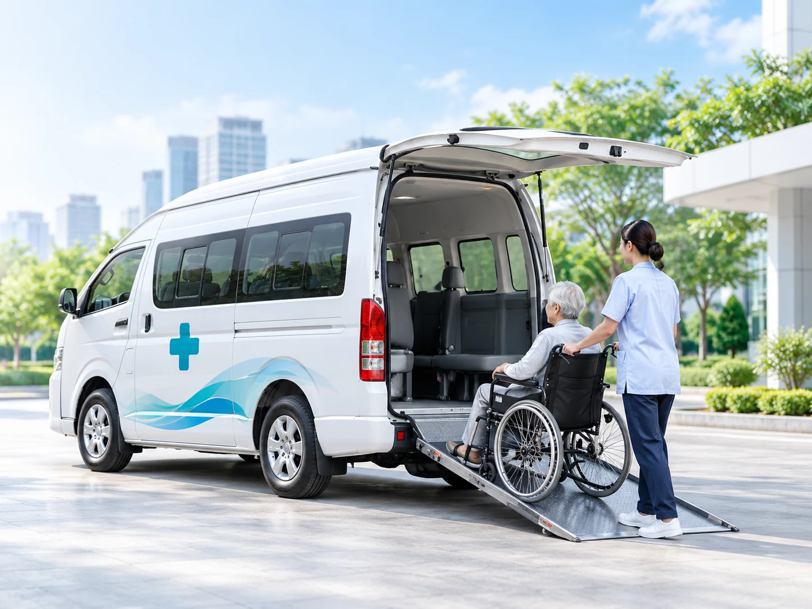

แจ้งข้อมูลผู้ป่วย
ระบุจุดรับ–ส่ง สภาพผู้เดินทาง
และอุปกรณ์ที่ต้องใช้

ไม่แน่ใจว่าควรใช้รถแบบไหน? เราช่วยประเมินและจับคู่รถ
ที่เหมาะกับอาการและอุปกรณ์ที่ต้องใช้
เลือกสภาพของผู้เดินทาง เพื่อดูประเภทรถที่เหมาะสม
มีรถหลายประเภทให้เลือก ตามอาการและอุปกรณ์ที่ต้องใช้
ราคาเริ่มต้นตามภาพตัวอย่าง • ราคาจริงขึ้นอยู่กับระยะทาง อุปกรณ์ และผู้ดูแล กรุณายืนยันก่อนเดินทาง
ให้การวางแผนเดินทางของคนที่คุณรักเป็นเรื่องง่าย
ระบุจุดรับ–ส่ง สภาพผู้เดินทาง
และอุปกรณ์ที่ต้องใช้
เลือกประเภทรถและการดูแล
ที่เหมาะกับการเดินทาง
ตรวจสอบรายละเอียด
และราคาก่อนตัดสินใจ
นัดหมายวัน เวลา และสถานที่
พร้อมเตรียมตัวเดินทาง
กรอกข้อมูลเบื้องต้น เพื่อดูคำแนะนำสำหรับการเดินทาง
ตรวจสอบรถ อุปกรณ์ และการดูแลก่อนเดินทาง
เห็นรายละเอียดค่าเดินทางและอุปกรณ์อย่างชัดเจน
ทั้งการเดินทางในเมืองและเส้นทางต่างจังหวัด
พูดคุยความต้องการเพื่อวางแผนให้เหมาะกับคุณ
ใช้รถเข็น • ต้องการทางลาด • มีญาติเดินทางด้วย
แนะนำ: Wheelchair Vanต้องใช้เตียง • ประเมินอุปกรณ์เพิ่มเติมก่อนเดินทาง
แนะนำ: Stretcher Vanเริ่มจากข้อมูลผู้เดินทาง แล้วให้เราช่วยจัดการรายละเอียด